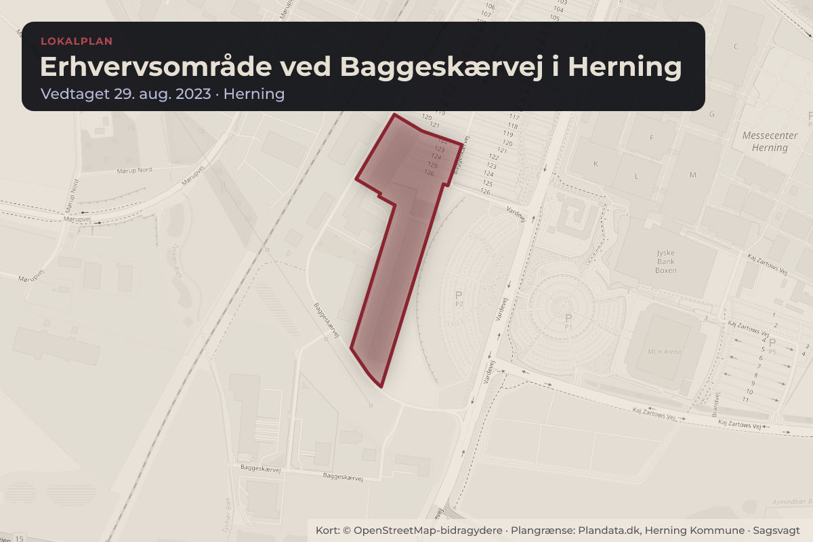
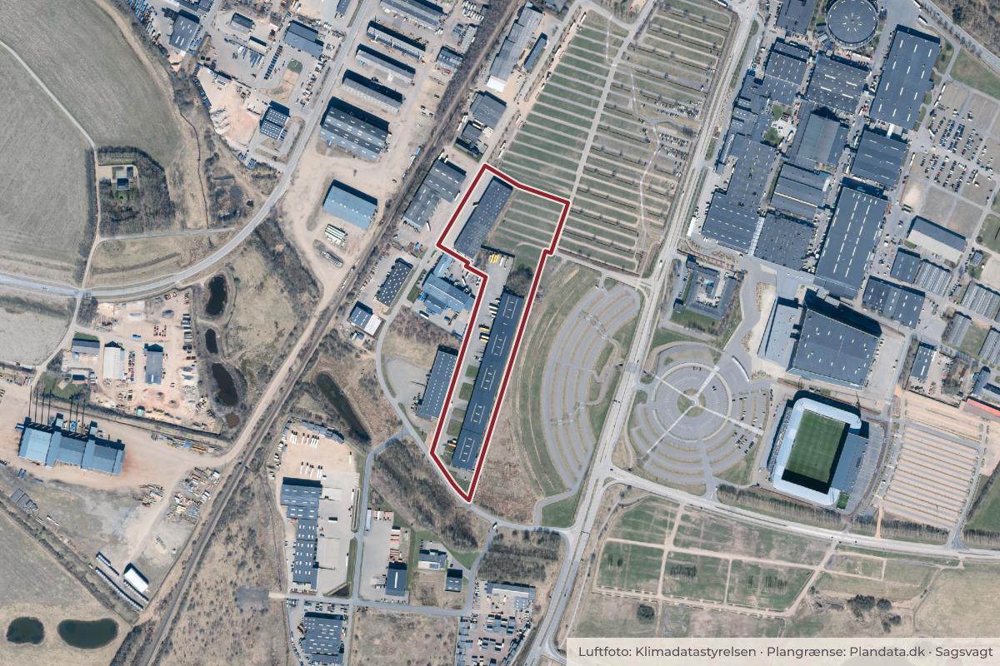

Besluttet 10. november, Herning Byråd, Herning
Endelige vedtagelse af lokalplan for erhvervsområde ved Baggeskærvej, Herning
Byggeri og lokalplanerErhverv og job

Kort: © OpenStreetMap-bidragydere. Plangrænse: Plandata.dk, Herning Kommune.

Kort fortalt
- Hvem
- Herning Byråd, Herning Kommune
- Hvornår
- Tirsdag 10. november 2026
- Status
- Besluttet. 3 er med de anførte ændringer endeligt vedtaget.
Er noget forkert her? Skriv til os
Læs hele sagen Kommunens egen tekst
Sagsfremstilling
Lokalplanen for erhvervsområdet ved Baggeskærvej er udarbejdet for at fremtidssikre
områdets udvikling og imødekomme virksomhedernes behov.
Lokalplanen omfatter en udvidelse mod Messemotorvejen og jernbanen. Baggrunden er blandt
andet et ønske om at etablere en intern overkørsel over Lervadskær Bæk mellem to matrikler,
hvoraf den ene matrikel i dag ligger uden for den gældende lokalplanafgrænsning. For at sikre
helhedsorienteret planlægning for området ved Baggeskærvej, inddrages denne matrikel samt
to yderligere matrikler i den nye lokalplanafgrænsning.
Lokalplanområdet
Lokalplanområdet er beliggende i den sydlige del af Herning, sydvest for MCH.
Lokalplanområdet afgrænses mod vest af jernbanen, mod øst af Vardevej, mod syd af
Messemotorvej og mod nord grænser området op til et eksisterende erhvervsområde og
MCH’s parkeringsarealer. Området har et areal på ca. 27 ha og er i dag et eksisterende
erhvervsområde.
Luftfoto af lokalplanområdet og de nære omgivelser
Lokalplanens formål
Lokalplanen har til formål at fastholde et område til erhverv ved Baggeskærvej i Herning syd.
Området er et eksisterende erhvervsområde, som med lokalplanen udvides sydvest mod
Messemotorvejen og jernbaneforbindelsen. Lokalplanen fastsætter bestemmelser for områdets
anvendelse, ny bebyggelse og anlæg samt sikrer tilkørsels- og vejforhold i området.
Lokalplanen har desuden til formål at bevare eksisterende grønne områder med respekt for
eksisterende forsyningsledninger samt at sikre areal til regnvandshåndtering.
Lokalplanens indhold
Lokalplanområdet udlægges til erhvervsformål og opdeles i fire delområder.
Delområde I udlægges til industri- og erhvervsvirksomheder, herunder større transport-,
industri- og lagervirksomheder samt detailhandel med særligt pladskrævende varer. Området
omfatter virksomheder i virksomhedsklasse 4-5. Delområde II udlægges ligeledes til industri og
erhvervsformål og forbeholdes industri-, erhvervs-, udstillings-, lager- og engrosvirksomheder
samt detailhandel med særligt pladskrævende varer. Her tillades virksomheder i
virksomhedsklasse 4-6. Delområde III og IV udlægges til grønne arealer med tekniske
funktioner, herunder ledningstracé og respektzoner for eksisterende ledninger. Delområde III
og IV må ikke anvendes til bebyggelse eller oplag.
Lokalplanen giver mulighed for ændret anvendelse af eksisterende bygninger samt opførelse
af ny bebyggelse. I delområde I og II kan der bygges op til tre etager og 16 meters højde. I
delområde II kan der, hvor produktions- og lagertekniske grunde taler for det, opføres byggeri
op til 25 meter. Der kan etableres detailhandel med særligt pladskrævende varer på op til
Lokalplanen fastsætter bebyggelsesprocent samt bestemmelser for ny bebyggelses materialer
og udformning. Yderligere fastsætter lokalplanen også retningslinjer for skiltning og
flagstænger i området samt vejbetjening og parkeringsforhold.
Tekniske afklaringer om regnvandshåndtering
Under den offentlige høring blev der den 19. februar 2026 afholdt møde med ejeren af matr.nr.
35r om det areal på ejendommen, som i lokalplanforslaget var reserveret til etablering af et
regnvandsbassin. På baggrund af mødet blev der gennemført yderligere tekniske afklaringer af
områdets regnvandshåndtering.
På baggrund af en analyse udarbejdet af Herning Vand vurderes det, at de eksisterende
regnvandsbassiner har tilstrækkelig kapacitet til at håndtere regnvandet fra lokalplanområdets
fremtidige udbygning. Analysen viser, at lokalplanområdet kan tilkobles det eksisterende
regnvandssystem, og spildevandsmyndigheden vurderer på den baggrund, at det er
acceptabelt at anvende de eksisterende bassiner til håndtering af regnvandet fra området.
Forvaltningen foreslår derfor, at reservationen til regnvandsbassinet udgår af
lokalplanforslaget. Det areal i delområde IV, som tidligere var reserveret til et regnvandsbassin
med tilhørende drifts- og vedligeholdelsesareal, overføres til delområde II. Ændringen
indebærer alene en justering af delområdegrænsen og medfører ikke ændringer i lokalplanens
overordnede formål eller områdets anvendelsesmuligheder.
Da ændringerne omfatter afgrænsningen mellem delområde II og IV, vurderede forvaltningen,
at lokalplanforslaget med de foreslåede ændringer krævede en supplerende høring efter
planlovens § 27, stk. 2. Høringen omfattede alene grundejere inden for delområde II, idet
Herning Kommune ejer arealerne inden for delområde IV. De berørte grundejere har dermed
haft mulighed for at udtale sig om ændringerne. Den supplerende høring blev gennemført fra
den 28. august til den 11. september 2026, begge dage inklusiv. Der indkom ikke
bemærkninger til de foreslåede ændringer i høringsperioden.
Revideret kortbilag 2, hvor areal til regnvandsbassin er udgået, samt ny afgrænsning mellem
delområde II og IV.
Offentlig høring
Forslag til lokalplan 14.E7.3 for erhvervsområde ved Baggeskærvej i Herning har været i
offentlig høring fra den 5. februar til og med den 5. marts 2026. Herning Kommune har i den
forbindelse modtaget to bemærkninger og ændringsforslag til planen.
De indkomne indsigelser omhandler følgende emner:
Motorvejsnære erhvervsarealer og vejbyggelinjer
Udvidelse af lokalplanafgrænsning
Nedenfor er der gengivet et kort resume af høringssvar og ændringsforslag. For uddybning af
indsigelser, kan bilag 1 – Høringsnotat, som er vedlagt sagen, tilgås.
Efter et kort resume af høringssvar, indsigelser og ændringsforslag følger forvaltningens
bemærkninger til de enkelte temaer. Forvaltningen har behandlet alle de indkomne
høringssvar, indsigelser og ændringsforslag i bilag 1 - Høringsnotat, som er vedlagt sagen,
hvor der også findes en uddybning af de enkelte emner.
Høringssvar af den 3. marts 2026 fra Vejdirektoratet
Vejdirektoratet gør ikke indsigelse mod lokalplanforslaget. Vejdirektoratet anbefaler, at
motorvejsnære erhvervsarealer forbeholdes transport og logistikvirksomhederne, som har
behov for direkte adgang til det overordnede vejnet, og opfordrer til, at lokalplanområdet
prioriterer sådanne virksomheder. Ydermere påpeger Vejdirektoratet, at området er omfattet af
vejbyggelinjer langs Messemotorvejen, og at der i lokalplanen indarbejdes oplyser om de
restriktioner, der gælder inden for disse arealer.
Høringssvar af den 4. marts 2026 fra Marius Pedersen A/S
Marius Pedersen A/S anmoder om, at lokalplanområdet udvides til også at omfatte
ejendommen Baggeskærvej 11, matr.nr. 1bk. Virksomheden begrunder ønsket med at
virksomheden ønsker en samlet planlægning for virksomhedens samlede aktiviteter på
Baggeskærvej.
Forvaltningens bemærkninger
Motorvejsnære erhvervsarealer og vejbyggelinjer
Forvaltningen bemærker, at Vejdirektoratet ikke har indsigelser mod lokalplanforslaget. Det
vurderes, at lokalplanen alene ajourfører plangrundlaget for et eksisterende erhvervsområde
og fortsat giver mulighed for transport- og logistikvirksomheder, hvorfor lokalplanen ikke
begrænser etableringen af transporttunge virksomheder. Forvaltningen er enig i
Vejdirektoratets bemærkninger om vejbyggelinjen langs Messemotorvejen og anbefaler derfor,
at lokalplanen suppleres med redegørelsestekst og en bestemmelse, der præciserer de
gældende restriktioner inden for vejbyggelinjearealet.
Udvidelse af lokalplanafgrænsning
Marius Pedersen A/S har i høringsperioden foreslået, at lokalplanområdet udvides til også at
omfatte virksomhedens ejendom på Baggeskærvej 11, matr.nr. 1bk, med henblik på at samle
virksomhedens aktiviteter inden for samme plangrundlag. Forvaltningen vurderer, at en
udvidelse af lokalplanområdet vil udgøre en væsentlig ændring af lokalplanforslaget, idet nye
arealer, som ikke har været en del af den gennemførte planlægningsproces, vil blive omfattet
af planlægningen. Ændringen vil derfor forudsætte en ny offentlig planproces efter planlovens
§ 27, stk. 2. Ændringsforslaget anbefales derfor ikke imødekommet.
Forvaltningen bemærker samtidig, at virksomhedens ejendom på Baggeskærvej 11 er omfattet
af lokalplan 14.E7.2, mens virksomhedens ejendom på matr.nr. 5 ved den endelige vedtagelse
af lokalplan 14.E7.3 vil blive omfattet af denne lokalplan. Begge lokalplaner udlægger
områderne til erhvervsformål og giver mulighed for lager-, logistik-, transport- og
industrirelaterede aktiviteter. Til trods for at lokalplanerne indeholder forskelle i blandt andet
miljøklasser, bygningshøjder og befæstelsesgrad, vurderer forvaltningen, at de planmæssige
rammer i overvejende grad understøtter de samme typer erhvervsaktiviteter og dermed
virksomhedens samlede aktiviteter på Baggeskærvej.
Forvaltningens vurdering
Forvaltningen vurderer, at Vejdirektoratets høringssvar samt de tekniske afklaringer
vedrørende regnvandshåndtering giver anledning til ændringer af lokalplanen. Ændringerne
omfatter indarbejdelse af oplysninger om vejbyggelinjer langs Messemotorvejen i redegørelsen
og lokalplanens bestemmelser, justering af delområdeafgrænsningen mellem delområde II og
IV samt udtagelse af bestemmelser og kortbilag vedrørende det planlagte regnvandsbassin.
Forvaltningen har endvidere konstateret en redaktionel fejl i lokalplanforslaget. Det fremgår
ikke af lokalplanforslagets bestemmelser og redegørelse, at en mindre del af den gældende
lokalplan 14.E6.3 ophæves inden for lokalplanområdet. Fejlen foreslås rettet i forbindelse med
den endelige vedtagelse.
Indstilling
BYPLAN- OG BOSÆTNINGSUDVALGET INDSTILLER,
at lokalplan 14.E7.3 for erhvervsområde ved Baggeskærvej i Herning indstilles til endelig
vedtagelse med følgende ændringer:
at lokalplanforslagets § 1.7 ændres til ”at sikre areal til regnvandshåndtering.”
at lokalplanforslagets § 3.14 ændres til ”Området må anvendes til anlæg til håndtering og
opstuvning af regn- og overfladevand, håndtering af klimaregn samt tekniske anlæg til
spildevandshåndtering (fx pumpestationer). Inden for området kan der anlægges
vejanlæg til servicering af tekniske anlæg.”
at lokalplanforslagets § 6.6 udgår.
at lokalplanforslagets § 6.7 udgår.
at lokalplanforslagets § 9.6 ændres til ” Delområdet indeholder § 3 beskyttede naturtyper,
som skal friholdes for bebyggelse, anlæg og oplag. Der kan dog etableres synlige anlæg
til håndtering af regn- og overfladevand inden for delområde IV.”
at der tilføjes en ny bestemmelse i § 9: ”Inden for den på kortbilag 3 viste vejbyggelinje
langs Messemotorvejen, herunder vejbyggelinjens højde- og passagetillæg, må der ikke
etableres bebyggelse, anlæg, oplag eller indretninger af blivende art.”
at lokalplanforslagets § 10.1 ændres til ” Der må ikke foretages permanente reguleringer
af det naturlige terræn på mere end +/- 1 meter. I forbindelse med regnvandshåndtering
og mulighed for afvanding ved gravitation kan der foretages yderligere terrænregulering.”
at der tilføjes en ny bestemmelse i §14: "Efter den endelige vedtagelse og offentlige
bekendtgørelse af denne lokalplan ophæves lokalplan nr. 14.E6.3, Erhvervsområde ved
MCH Messecenter Herning vedtaget 17. november 2015 for den del, der er omfattet af
nærværende lokalplan."
at kortbilag 2 revideres, så det areal, der er reserveret til regnvandsbassin samt drift- og
vedligeholdelseszone, udgår. Som følge heraf ændres afgrænsningen mellem delområde
II og delområde IV.
at kortbilag 3 revideres med en ny delområdeafgrænsning svarende til
delområdeafgrænsningen på kortbilag 2.
at der i lokalplanens redegørelse under afsnit 1.7 Myndighedstilladelser indarbejdes et
afsnit med oplysninger om vejbyggelinjen langs Messemotorvejen, herunder at byggeri
og anlæg inden for vejbyggelinjen kræver Vejdirektoratets tilladelse.
at lokalplanens redegørelse revideres som følge af ovenstående ændringer.
Økonomi-, Erhvervs- og Uddannelsesudvalget anbefaler sagen til Byrådet.
Beslutning
Lokalplan nr. 14.E7.3 er med de anførte ændringer endeligt vedtaget.
Kilde: Herning Kommune, Herning Byråd, referat fra mødet tirsdag 10. november 2026, punkt 10. Læs den originale sag hos kommunen.
Steder i sagen: Baggeskærvej